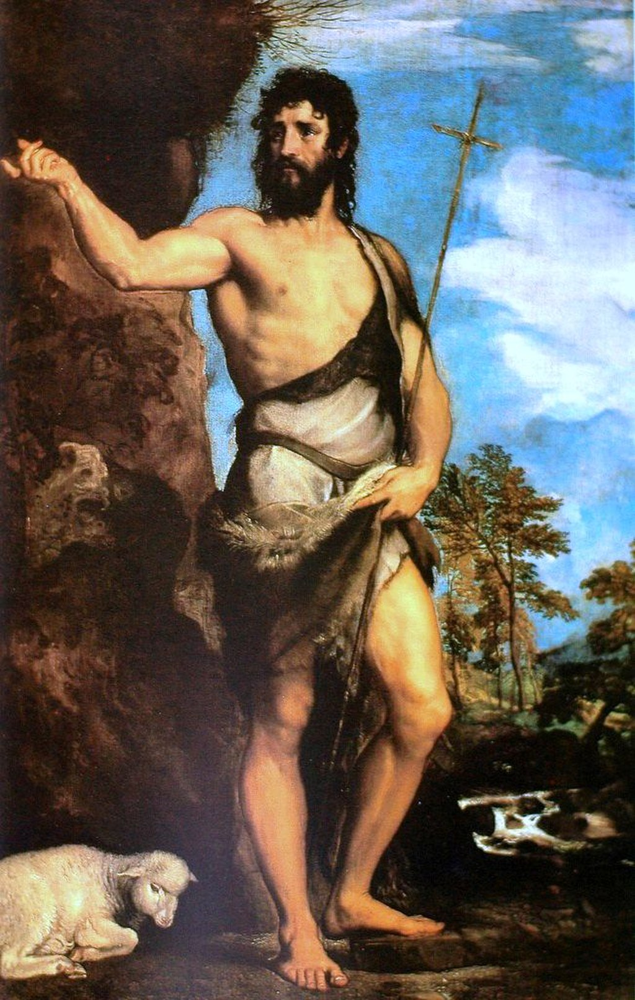

<head>
<meta charset="UTF-8" />
<meta name="keywords" content="drawing, painting" />
<meta name="description" content="drawings by Sunjy" />
<title>Sunjy</title>
<link rel="shortcut icon" type="image/x-icon" href="../../mImages/mCommon/favicon.ico" media="screen" />
<link rel="stylesheet" type="text/css" href="../../mCsses/mCommon/mCssA.css" />
<link rel="stylesheet" type="text/css" href="../../mCsses/mCommon/mCssB.css" />
<link rel="stylesheet" type="text/css" href="../../mCsses/mCommon/mCssC.css" />
<link rel="stylesheet" type="text/css" href="../../mCsses/mCommon/mCssD.css" />
<link rel="stylesheet" type="text/css" href="../../mCsses/mContent/mCssA.css" />
<link rel="stylesheet" type="text/css" href="../../mCsses/mContent/mCssB.css" />
<link rel="stylesheet" type="text/css" href="../../mCsses/mContent/mCssC.css" />
<link rel="stylesheet" type="text/css" href="../../mCsses/mContent/mCssD.css" />
</head>
<script type="text/javascript" src="../../mScripts/mContent/mContentAA.js" /></script>
<script type="text/javascript" src="../../mScripts/mContent/mContentAB.js" /></script>
<script type="text/javascript" src="../../mScripts/mContent/mContentAC.js" /></script>
<script type="text/javascript" src="../../mScripts/mContent/mContentAD.js" /></script>
<script type="text/javascript"></script> 
<script type="text/javascript">
document.write('<div class="mImgAbsolute"></div>');
/*
document.write('<p class="mFontSizeBColor" />From a white paper...</p>');
document.write('<table class="center"><tr><td>');
document.write('');
document.write('</td></tr></table>');
*/
</script>


<script type="text/javascript">
document.write('<p class="mFontSizeBColor" />Saint John the Baptist</p>');
document.write('<p class="mFontSizeSColor" />“Saint John the Baptist” by Titian was painted for the now-demolished church of Santa Maria Maggiore. The overpowering but theatrical pose of a muscular athlete is in contrast to the tradition of a hermit emaciated by exhausting fast. Titian’s passion for color dominates the academic quality of this composition. During his long life, Titian’s artistic manner changed drastically, but he retained a lifelong interest in color.<br><br>The artists, Tiziano Vecelli, known in English as Titian was a painter during the Renaissance. He is considered the most important member of the 16th-century Venetian school. Titian was one of the most versatile of Italian painters, adept with portraits, landscape backgrounds, and mythological and religious subjects. His painting methods, particularly in the application and use of color, exercised a profound influence on future generations of Western art.<br></p>');
document.write('<table class="center" /><tr><td>');
document.write('<br>The artists, Tiziano Vecelli, known in English as Titian was a painter during the Renaissance. He is considered the most important member of the 16th-century Venetian school. Titian was one of the most versatile of Italian painters, adept with portraits, landscape backgrounds, and mythological and religious subjects. His painting methods, particularly in the application and use of color, exercised a profound influence on future generations of Western art.<br>" />');
document.write('</td></tr></table>');
</script>


